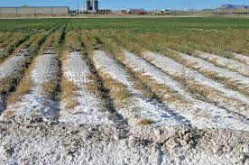

pH, Electrical Conductivity and OC Elements
pH
Static Map »
Dynamic Map »
EC
Static Map »
Dynamic Map »
OC
Static Map »
Dynamic Map »

Salinity
Static Map »
Dynamic Map »
pH Map
×
EC Map
×
OC Map
×
Salinity Map
×